보호자 AI 상담 → 문진 → 예약 → 진료(EMR·처방) → 경과 관리까지 동물병원 진료 워크플로우를 연결·자동화한 플랫폼입니다. 보호자·수의사·운영자 3개 웹앱과 LangGraph 오케스트레이터, RAG 기반 문진, AWS 자동 배포 파이프라인으로 서비스를 설계·구현했습니다.
보호자의 한마디 → AI 증상 감지 → 첨부 사진 Vision 분석 → 응급도·의심질환 정리 (실서비스 녹화)
전화 예약·종이 문진으로 운영되는 동물병원에서는 보호자가 “지금 병원에 가야 할 응급인지”를 스스로 판단하기 어렵습니다. 수의사는 진료와 행정 업무를 동시에 처리해야 하고, 상담·문진·예약·진료·처방·경과 기록이 서로 끊겨 있습니다.
보호자 메시지는 FastAPI가 SSE 스트림으로 받고, LangGraph 오케스트레이터가 매 턴 담당 에이전트를 결정합니다. 명확한 입력은 규칙으로, 애매한 자연어는 LLM이 분류합니다.
문진 200건을 실행한 뒤 대화의 문제를 유형별로 나누고, 다른 수정과 섞이지 않게 하나씩 고쳐 같은 200건으로 재실행했습니다.
같은 200건 재실행에서 검색 결과를 언급한 대화 200 → 0건, 질문 연결률 58 → 72%, 고정 문구로 끝난 대화 199 → 0건. 문진 199/200건 완료, 평균 3.7턴.
PM을 맡아 범위와 진행을 조율하고, 평가셋 설계와 문진 대화 개선, 병원 입점·예약 후 경과 관리 기능, 배포 안정화를 담당했습니다.
영국 동물병원 임상 노트(PetEVAL)를 한국 보호자 구어체로 바꾼 문진 200건으로, 대화 개선 전후를 같은 200건 재실행으로 비교했습니다.
| 지표 | 개선 전 | 개선 후 |
|---|---|---|
| 사례 검색 결과를 언급한 대화 | 200건 | 0건 |
| 질문 연결률 | 58% | 72% |
| 예약 고정문구(천편일률) | 199건 | 0건 · 표현 다양성 1→29 |
| 공감어 연속 2턴 반복 | 21건 | 6건 |
| 마무리 증상 나열형 | 122건 | 33건 |
| 안전성 회귀(진단 단정·자가처치 등) | — | 0건 |
운영 당시 라이브 서비스(*.medipaw.app)에서 데모 데이터로 캡처. 이미지를 클릭하면 확대됩니다.
보호자 상담 → 문진 → 예약 → 진료(EMR) → 처방까지 이어지는 전체 워크플로우
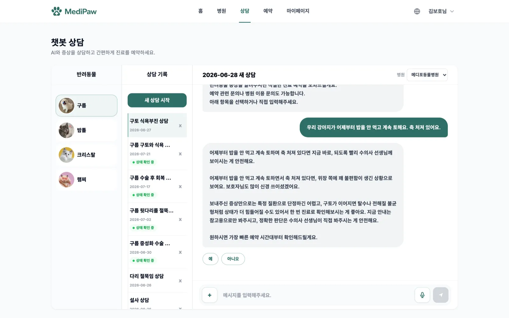
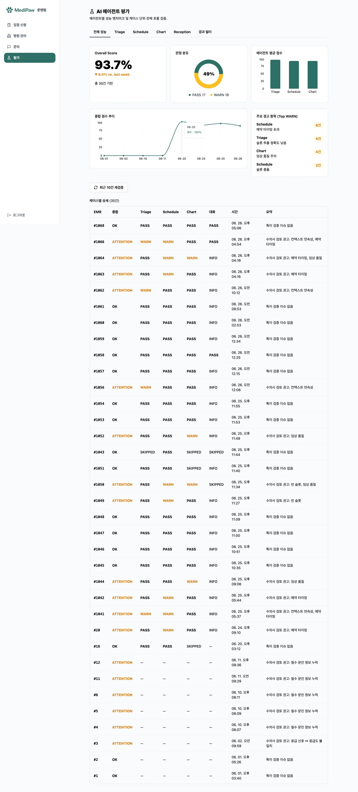
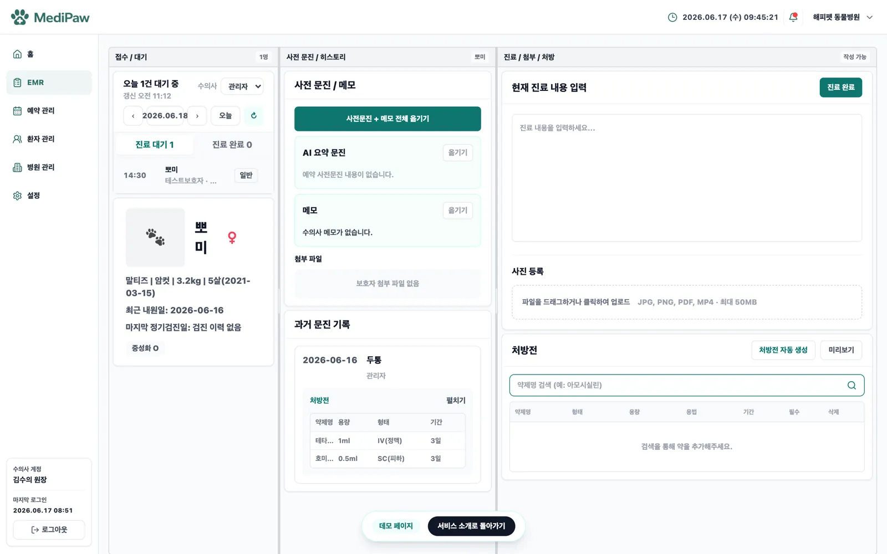
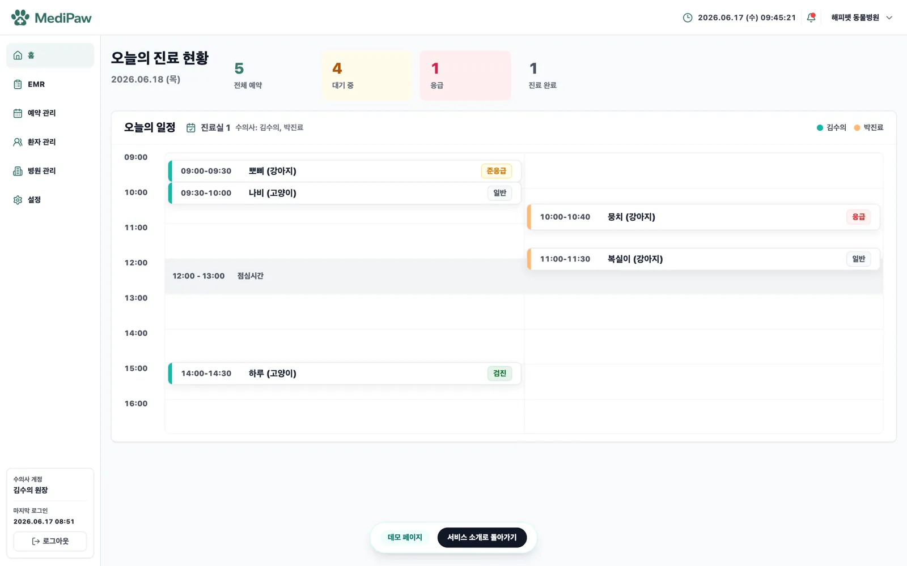
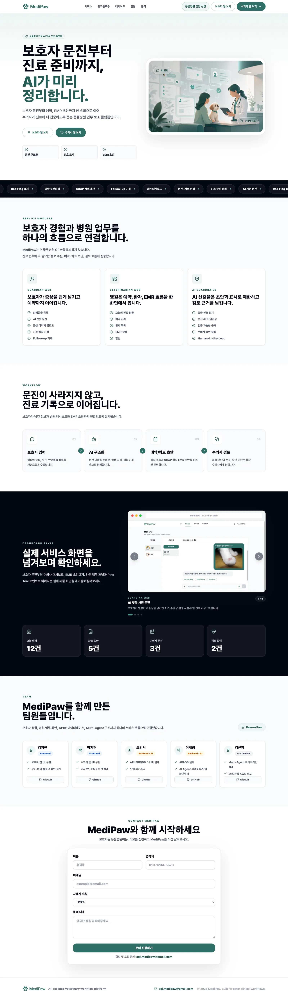
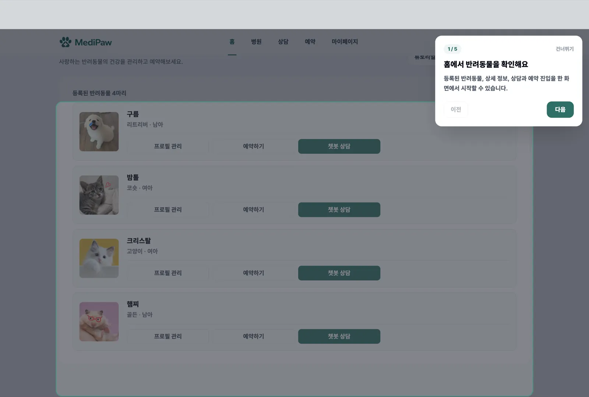
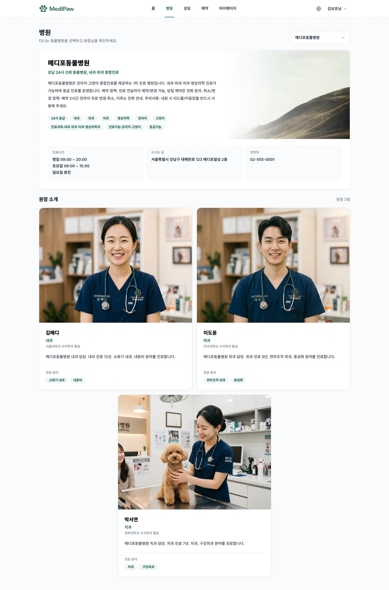
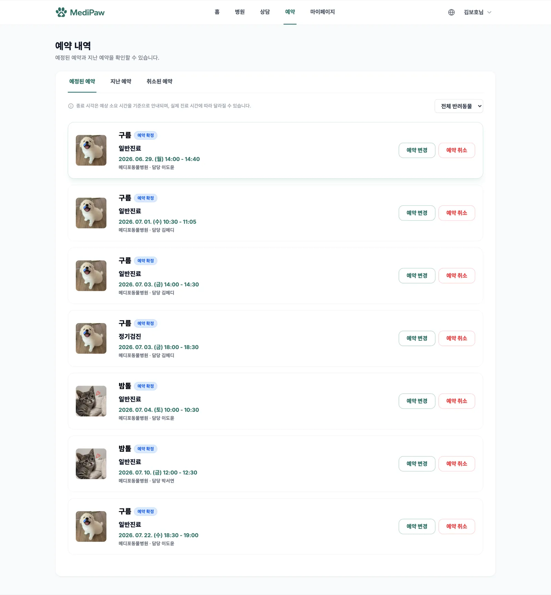
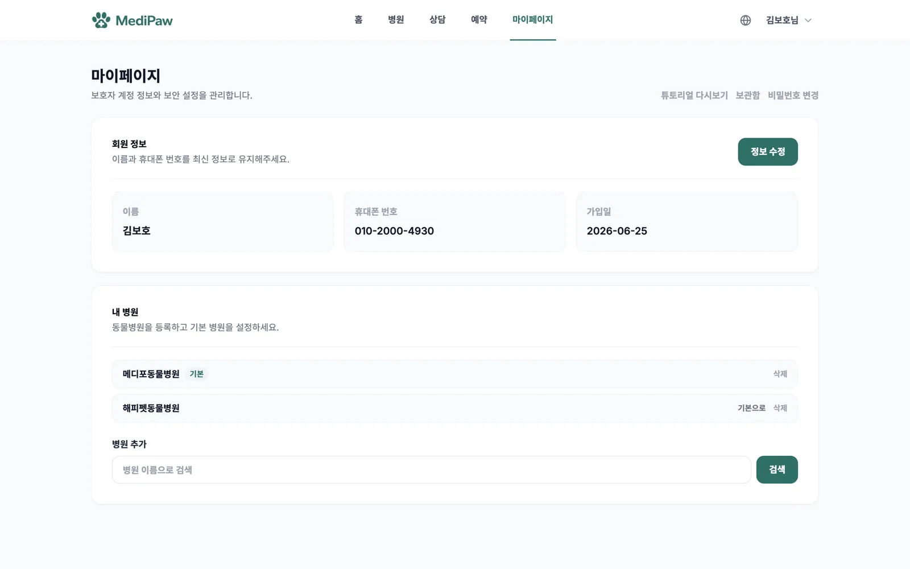
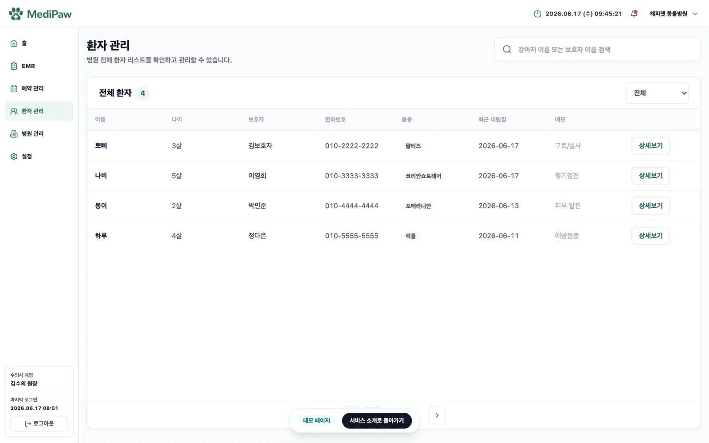
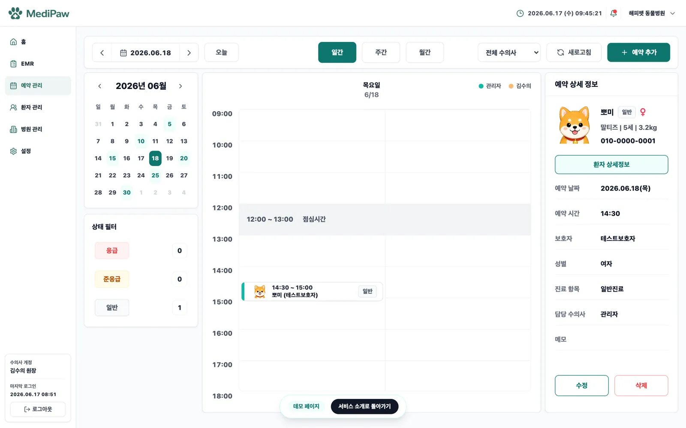
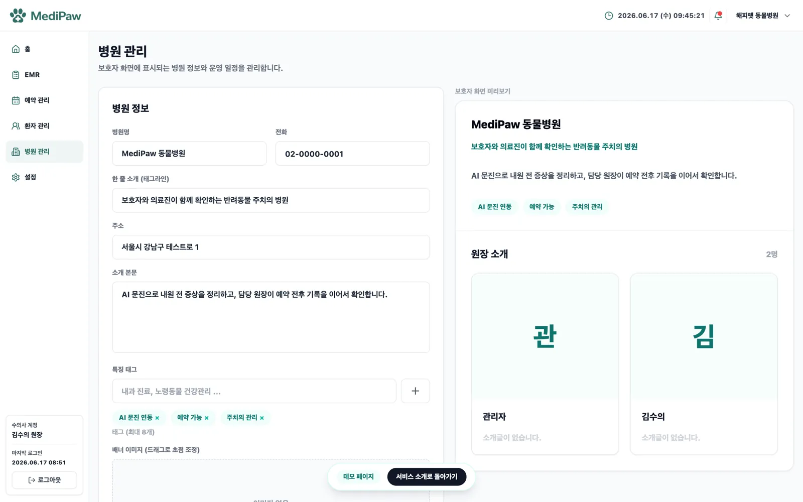
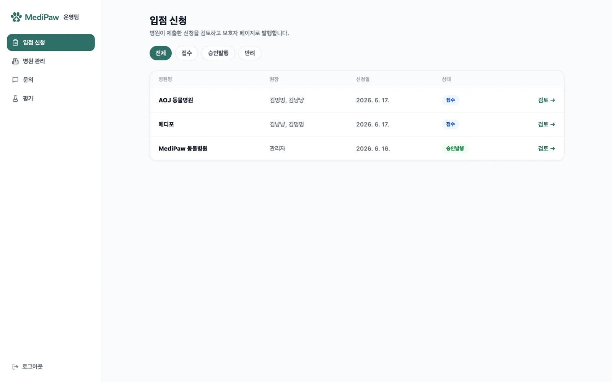
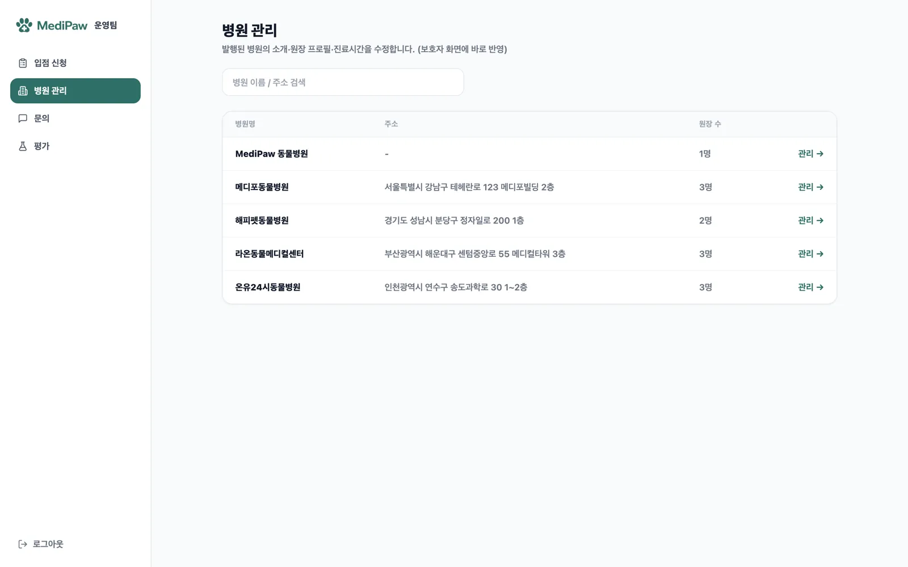
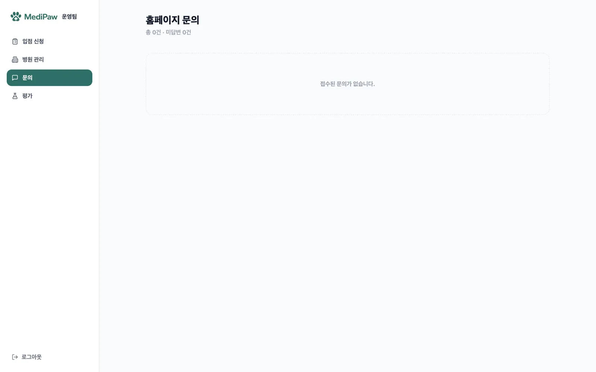
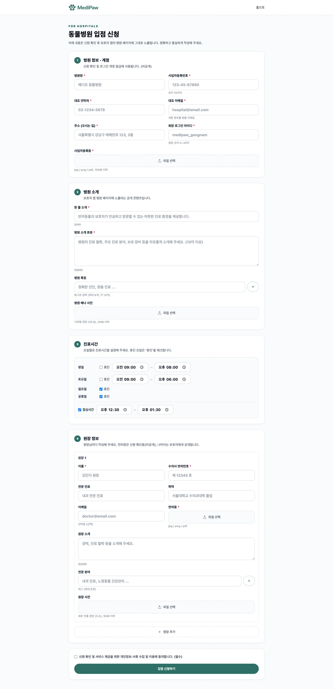